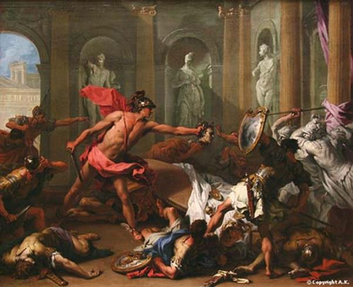

Đám cưới của Persée được tổ chức vô cùng trọng thể trong cung điện của nhà vua Céphée. Đây chẳng phải chỉ là ngày vui riêng của gia đình nhà vua mà còn là ngày vui chung của mọi người dân sống trên đất nước này. Khắp nơi đều treo đèn kết hoa, mở tiệc ăn mừng.
Giữa lúc bữa tiệc đang diễn ra tưng bừng vui vẻ thì có tiếng ầm ầm ngoài cửa, tiếng binh khí va chạm nhau xoang xoảng, tiếng kêu thét, tiếng hò la. rồi một người lính vẻ hốt hoảng, đẩy cửa phòng tiệc ùa vào, hét lớn:
- Phinée kéo binh đến đòi Andromède!
Cả phòng tiệc nhốn nháo, Persée đứng dậy sẵn sàng chờ đợi mọi thử thách. Vừa lúc đó thì Phinée và một đám bộ hạ đạp cửa phòng tiệc tràn vào. Tay khiên tay lao, vẻ mặt hầm hầm, Phinée đảo mắt nhìn mọi người rồi quát.
- Hỡi tên Persée láo xược! Đồ tứ cố vô thân, cha vơ chú váo ở đâu mà dám đến đây ngang nhiên cướp vợ của ta! Ta tuy chưa chính thức cưới Andromède, nhưng ta muốn cưới nàng lúc nào cũng được, vì nàng là cháu ta, tùy quyền định đoạt của ta. Khôn hồn thì mi hãy cút khỏi nơi đây, kẻo không thì đám cưới này biến thành đám tang đó!
Nhà vua Céphée đưa tay ra can ngăn Phinée. Ông dùng những lời lẽ dịu dàng thuyết phục hắn:
- Hỡi Phinée, xin ngài đừng nóng nảy! Người này đây, Persée, con của đấng phụ vương Zeus chí tôn chí kính đã được ta chọn làm con rể. Chàng đã lập được một chiến công lừng lẫy, giết loài thủy quái, cứu sống con gái ta và giải trừ cho thần dân đất nước này khỏi một tai họa nặng nề. Chàng xứng đáng là một bậc anh hùng và xứng đáng là chồng của Andromède, người con gái xinh đẹp của ta và hoàng hậu Cassiopé. Nếu ngài thật lòng yêu mến Andromède và kính trọng ta, thì sao ngài lại không chịu chia sẻ với Andromède nỗi đau buồn khi Andromède phải hy sinh thân mình làm vật hiến tế cho con quỷ biển để cứu vớt muôn dân? Sao ngài lại không đem hết tài năng siêu việt ra để diệt trừ con quái vật cứu lấy Andromède, người vợ chưa cưới của ngài? Sao ngài không trút hết nỗi căm tức và giận dữ vào con quái vật, kẻ đã cướp vợ của ngài mà lại bây giờ đến đây trút căm tức và giận dữ vào Persée, người anh hùng được toàn dân mến phục? Hỡi Phinée, xin ngài hãy tôn trọng công lý, hãy vì thần Zeus và các vị thần Olympe mà trả lại cho chúng ta niềm vui, bữa tiệc này!

Phinée chẳng nói chẳng rằng, tiến lên một bước gạt mạnh nhà vua sang một bên và bất thình lình phóng luôn mũi lao cầm trong tay về phía Persée. Ngọn lao bay vút đi và cắm phập ngay xuống cạnh Persée. Persée lập tức rút gươm và lao tới, Phinée chạy vòng sang bên kia chiếc bàn thờ thần. Persée nhổ ngọn lao của Phinée phóng theo nhưng ngọn lao không trúng Phinée mà lại đâm thẳng vào đầu một bộ hạ của hắn. Anh ta chúi xuống một cái như bị người đẩy mạnh ở đằng sau và chết sấp mặt xuống đất. Từ đỉnh Olympe nữ thần Athéna biết hết mọi chuyện. Nàng bay vút xuống cung điện của vua Céphée xông vào giữa cuộc giao chiến. Không một ai nhìn thấy nàng cả vì con mắt của người trần thế không thể biết hết được công việc của các bậc thần linh. Nữ thần khơi lên trong trái tim người anh hùng Persée, con của Zeus lòng dũng cảm. Và nữ thần luôn luôn ở bên cạnh người con của Zeus để bảo vệ cho chàng bằng tấm khiên đồng sáng như ánh mặt trời mặt trăng. Persée với cây gươm dài và cong lần lượt hạ hết dũng sĩ này đến dũng sĩ khác, bộ hạ của Phinée. Chỉ một mình chàng, chàng giao đấu với tất cả bọn chúng, hết nhóm này đến nhóm khác, khôn khéo nhanh nhẹn như một con chim ưng. Nhiều dũng sĩ và anh hùng của xứ sở Éthiopie và tùy tướng của vua Céphée, được mời đến dự tiệc hôm ấy, cũng tham gia chiến đấu và họ cũng lần lượt ngã xuống bên xác chết đẫm máu của quân thù. Cuối cùng chỉ còn lại Persée với một số ít dũng sĩ bị hàng chục tay gươm dồn về một góc phòng. Tình thế thật nguy cấp. Nhưng Persée người anh hùng con của Zeus không hề nao núng. Chàng nghĩ đến thứ vũ khí vô địch của mình. Chàng nhảy xa ra khỏi vòng vây của kẻ thù và hét lên:
- Những ai là bạn chiến đấu của ta, các anh hùng, dũng sĩ, tùy tướng của Céphée, hãy quay ngay lưng lại. Hãy quay ngay lưng lại để không nhìn thấy mặt ta!
Các bạn chiến đấu của Persée lập tức làm theo lời chàng. Còn chàng, ngay lúc ấy, thò tay vào chiếc đẫy thần lấy đầu ác quỷ Méduse ra chĩa vào mặt các địch thủ. Chỉ trong giây lát căn phòng to rộng vừa mới đây ầm ầm tiếng người, chan chát tiếng binh khí mà nay bỗng im bặt hẳn đi. Tất cả những tay kiếm của Phinée đều biến thành những bức tượng đá, mỗi người mỗi vẻ nom cứng nhắc sững sờ. Phinée thấy vậy nhắm mắt lại và quay đi một bên. Trái tim hắn giờ đây chỉ còn nỗi sợ hãi. Hắn van lạy Persée, nhưng chậm mất rồi. Persée chĩa đầu ác quỷ về phía trước mặt hắn và thét lớn:
- Trông đây, đồ hèn nhát! Mi sẽ được ở lại vĩnh viễn trong căn phòng của bữa tiệc cưới này để cho nàng Andromède, người vợ xinh đẹp của ta giữ lại được một kỷ niệm về một gã cầu hôn tầm thường và bạo ngược.
Nghe tiếng thét của Persée, Phinée đang quỳ và nhắm mắt bỗng giật mình và mở bừng mắt ra. Thế là hắn biến thành đá, một bức tượng đang khúm núm với một vẻ nô lệ và hèn nhát. Phinée trở thành một biểu tượng của thói hèn nhát, khúm núm, nô lệ.